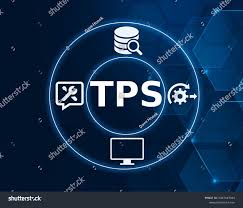

(MIS)
Management Information Systems
is an important discipline that combines business and computing to assist organizations in digitizing work and managing an increasingly remote workforce.

What is MIS ?
To The Right Information
To The Right Person
At The Right Place
At The Right Time
In The Right Form
At The Right Cost
Components of MIS:

people who use the information system

The data that the information system records

procedures put in place on how to record, store and analyze data

these are programs used to handle the data such as servers, database software, etc.
Types of Information Systems



Conclusion :- MIS helps managers make effective decisions to support ongoing operations. An MIS produces several reports, including schedule, on-demand, exception, and detailed reports. The reports contain vital indicators so a manager can take corrective action when necessary.